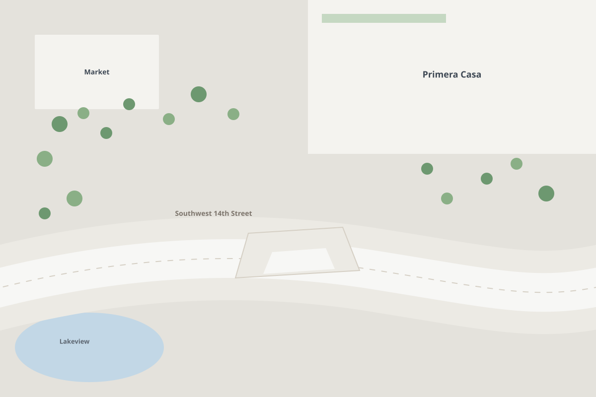
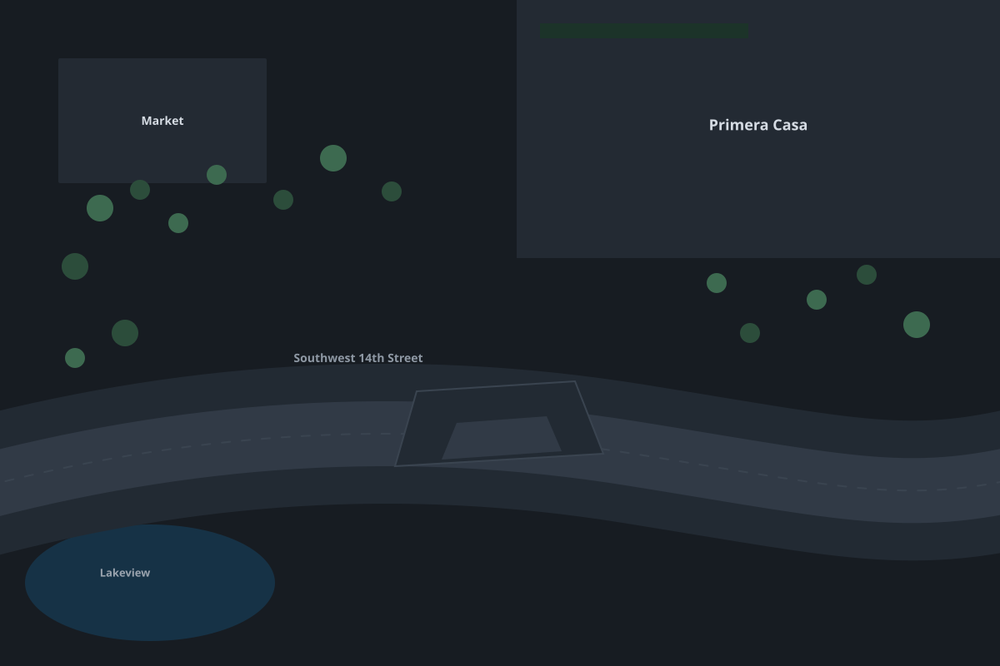

M
drop-off Sample
Moving · Drop-off · type “ramp”
Sample hazard
Seeded for the demo, not a real report. Votes still count for the demo.
No photo was sent with this report


drop-offramp · SW 14th
Schematic campus drawing
- Confidence
- 0.4
- Clearance
- Not measured
- Width left
- Not measured